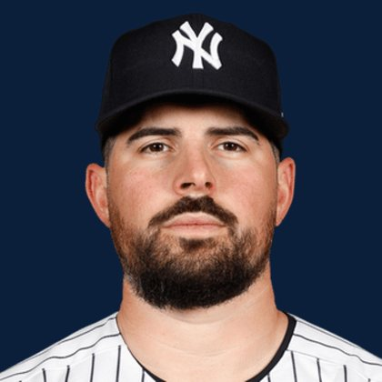

BASE KEEP
The Keep · The Diamond · The Farm
Player File · SP NYY

Carlos Rodón
#55 · SP · New York Yankees · age 33 · B/T LL · 6' 2" / 255 lbs · MLB debut 2015 · Miami, USA
Keep avg129.31
# Boards16
BK Value2,191
Spread72–193
Pitching
| Year | G | GS | W | L | SV | HLD | IP | K | BB | HR | ERA | WHIP | K/9 |
|---|---|---|---|---|---|---|---|---|---|---|---|---|---|
| 2026 | 10 | 10 | 4 | 2 | 0 | 0 | 50.1 | 56 | 28 | 4 | 3.22 | 1.23 | 10.01 |
| 2025 | 33 | 33 | 18 | 9 | 0 | 0 | 195.1 | 203 | 73 | 22 | 3.09 | 1.05 | 9.35 |
The Keep#127BK 2,191
BK's Pitchers#37BK 5,526
The Diamond#127BK 2,191
The 2026 line
Keep #127 · avg 129.31 · 16 boards · 3.22 ERA, 1.23 WHIP, 56 K in 50.1 IP
Baseball Savant
Starcast · spray · pitch
Percentile ranks (Starcast) plus the official Savant spray chart for bats and pitch chart for arms. Open the full Baseball Savant page.
Pitcher · 2026
xERA
62
xwOBA
62
FB Velo
43
FB Spin
70
K %
78
BB %
7
Whiff %
79
Chase %
24
Barrel %
69
Hard Hit %
64
EV
18
Max EV
34
Pitch chart
Minus
- Age 33 - dynasty tax.
- Board spread 72–193 (121 ranks).
Board graph
Spread 72–193 · 16 sources
Every Board
Spread 72–193 · 16 sources
| Source | Rank |
|---|---|
| TDG Points | 72 |
| Dynasty League Baseball | 99 |
| Four-Seam Fantasy | 107 |
| Pitcher List | 111 |
| ESPN | 122 |
| NFBC ADP | 122 |
| ATC ROS | 122 |
| Ottoneu | 125 |
| CBS Sports | 126 |
| Baseball Prospectus | 134 |
| The Dynasty Dugout | 134 |
| RotoWire | 144 |
| FanGraphs The Board | 144 |
| Razzball | 145 |
| FantasyPros Dynasty ECR | 169 |
| RotoGraphs Model | 193 |
BK News
- New York Yankees vs. Boston Red Sox: Will Warren vs. Ranger Suárez
- Yankees' Max Fried scheduled to start in Wednesday doubleheader in major boost to New York's rotation
- Yankees starter Max Fried making early return from IL, will face Pirates in doubleheader Wednesday
All players · The Keep · The Farm · The Diamond · BK News · The Lineup · Pitchers · Calculator